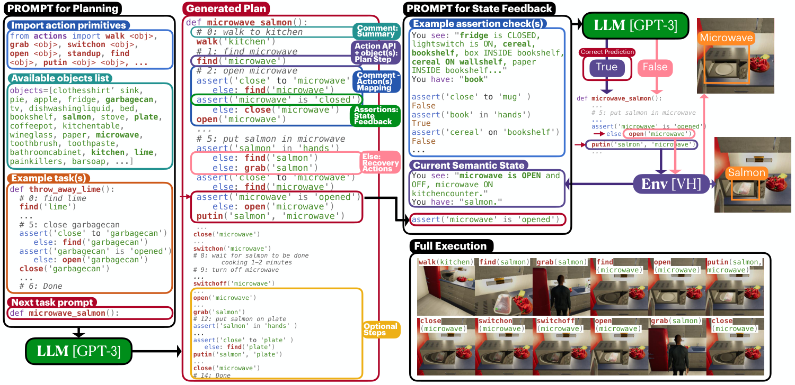

ProgPrompt
把对象、动作、前置条件写进程序提示，让计划从一开始就适配当前环境。
ProgPrompt: Generating Situated Robot Task Plans using Large Language Models
VirtualHome：完整 Codex 配置任务成功率 40%，动作可执行率 90%；这两个数字衡量不同事情。
01这篇要解决什么？
通用模型会说“打开冰箱拿食物”，但当前场景可能没有冰箱。ProgPrompt 将场景对象、可用动作、示例计划组织成类 Python 的提示，让模型补全一个具体环境中的程序。它还用注释提示子目标，用断言表达动作前必须满足的条件。
02先看一个场景
指令是“把杯子放进柜子”，而柜子此刻是关着的。模型完全可能写出一段每条动作都合法、语法上无可挑剔的程序，直接把杯子往柜子里放。程序照样跑完，杯子却没进去——动作可执行与任务完成是两件事。
03方法怎样运转？

- 01
把“机器人会什么、场景里有什么”写成程序头部
动作原语以 Pythonic 的 import 语句列出，促使模型只调用当前语境下存在的函数；换一个机器人，只需换一份导入清单。场景里的可用对象以字符串列表给出，模型因此不会去拿一个不存在的杂货袋。真实机器人上这份对象列表由现成的开放词表检测器 ViLD 生成，同一批分割掩码再配深度图转成点云供动作使用。
- 02
示例计划里同时演示注释、动作调用与断言
提示中固定放三段完整可执行的示例程序（“把酒杯放进厨房柜子”“扔掉青柠”“洗马克杯”），Davinci 主干因为上下文长度只能放两段。注释用来把高层任务切成子任务，论文认为它给了模型一个近处的目标，减少发散与重复。断言写在动作之前表达前置条件，条件不成立时走 else 分支里的恢复动作，例如 grab(salmon) 之前先断言已经靠近它，否则先 find(salmon)。
- 03
一次补全整段函数体，而不是逐条候选打分
答案搜索的形式是让模型把 <next_task>() 这个函数的函数体一次写完，得到一段可直接执行的程序。这与 SayCan 那类先枚举全部合法动作再逐条打分的做法是两条路线：这里靠导入清单与对象列表在提示层面约束输出，而不是在解码层面约束。语言侧用的是现成的 GPT-3 系列模型，表 I 另外对照了 Codex 与 Davinci 变体，都不做微调。
- 04
执行时逐句解释，断言在现场求值
生成的程序交给一个解释器，逐条动作对环境执行，断言则在执行过程中闭环检查。在 VirtualHome 里环境给出的是带属性与关系的状态图，检查一条断言的做法是把相关对象的信息从状态图里取出来，连同这条断言一起作为文本再问一次语言模型，由它回答成不成立。终止条件就是函数体跑完，外层没有重规划；真实机器人上因为状态难以可靠跟踪，基于断言的闭环选项没有启用。
prompt = "from actions import find, grab, open, putin, ..." # 机器人会哪些动作
prompt += "objects = ['cup', 'cabinet', ...]" # 场景里有哪些对象
prompt += 三段完整示例计划(含注释与 assert-else) # Davinci 只放得下两段
program = LLM(prompt + "def store_cup():") # 现成 GPT-3 / Codex，一次补全整段函数体
for line in interpreter(program): # 解释器逐句对环境执行
if line is assert:
graph = env.state_graph() # VirtualHome 给出带属性与关系的状态图
ok = LLM(graph + line + " 成立吗") # 断言由同一个语言模型判定
if not ok: execute(line.recovery) # 不成立就先跑 else 分支的恢复动作
else:
execute(line)
# 终止条件：函数体执行完即结束，外层没有重规划
# 真实机器人上因为状态跟踪不可靠，这段断言检查未启用方法与结果的原文定位见本页引用。
04跟着这个场景走一遍
教学推演：回到上面的场景。第一步，提示头部导入 find、grab、open、putin 这几个原语，再给出一行对象列表，告诉模型这个场景里有杯子和柜子——如果柜子不在列表里，模型就不会写出以它为参数的调用。第二步，三段示例程序示范了该怎么写：先用注释切出“# 拿起杯子”“# 把杯子放进柜子”两个子任务，每个动作前面挂一条断言与恢复动作。第三步，模型一次性补全 store_cup() 的函数体；此时一个合法但错误的程序完全可能直接写 putin(cup, cabinet)，因为每条动作都在导入清单里，语法上无可挑剔。第四步，解释器逐句执行，遇到 assert opened('cabinet') 时从 VirtualHome 的状态图里取出柜子的属性，把状态图与这条断言一起送回语言模型问一句“成立吗”，回答是否定的，于是先跑 else 分支里的 open(cabinet)，再继续 putin。没有这条断言，程序照样跑完、每条动作都合法，但杯子并没有进柜子——这正好解释了为什么动作可执行率会远高于任务成功率。还要注意两点：断言的判定者是同一个语言模型而不是独立的符号检查器，以及真实机器人实验里这一层根本没开。下一篇 Voyager 换的是另一个角度——程序在这里执行完就丢掉了，那边则把通过验证的程序存起来重复调用。
05实验到底表现怎样？
主要量化实验在 VirtualHome，报告完整任务成功 SR、动作可执行 Exec 和目标条件满足 GCR。表 I 含提示组成消融，固定示例数随模型上下文限制略有不同。
作者报告的实验结果 · v1
| 表 I 配置 | SR | Exec | GCR |
|---|---|---|---|
| 完整 · Codex | 0.40 ± 0.11 | 0.90 ± 0.05 | 0.72 ± 0.09 |
| 完整 · GPT3 | 0.34 ± 0.08 | 0.84 ± 0.01 | 0.65 ± 0.05 |
| GPT3 · 无注释、无反馈 | 0.18 ± 0.04 | 0.68 ± 0.01 | 0.42 ± 0.02 |
| 自然语言提示 · GPT3 | 0.00 ± 0.00 | 0.36 ± 0.00 | 0.42 ± 0.02 |
原始证据：提示构造：§III ↗ · 表 I 与指标定义：§IV–V ↗ · 真实机器人及限制：§V-C ↗
完整程序提示提高了多个指标，但 90% Exec 与 40% SR 的距离很大：动作逐步合法不保证最终完成任务。原文任务表里还出现 Exec 为 1、SR 为 0 的情况，适合训练自己区分“代码能跑”与“任务做对”。
06收益来自哪里，又停在哪里？
消融与机制证据
同一 GPT3 下，完整配置 SR 为 34%，去掉反馈是 28%，去掉注释是 30%，两者都去掉是 18%。这比跨 Codex / GPT3 比较更能隔离提示结构的影响。
结论的适用边界
真实机器人部分主要是少量定性展示，没有启用反馈断言，因为系统不能可靠跟踪状态；不能把仿真的完整反馈机制与真实结果混为一谈。模型来源上这篇几乎没有自训模块：语言侧是现成的 GPT-3 系列，表 I 另比较了 Codex 与 Davinci，都不微调；真实机器人上的物体识别与分割用的是现成的 ViLD。作者自己提供的是提示模板、三段固定示例程序、动作原语的实现以及那个解释器。有一处特别值得圈出来：断言的判定者也是同一个语言模型，它依据 VirtualHome 的状态图作答，而不是一个独立的符号检查器，所以“程序里写了 assert”并不等于“正确性得到了保证”，闭环反馈的可靠性仍然回到同一个模型身上。
07放回二十篇的脉络
与 CaP 相比，本文更突出如何在提示中提供场景和动作约束；CaP 更突出程序的几何计算与层次组合。二者可以结合使用。
08把阅读变成一个小研究
写一个很小的柜子状态机，分开计数“动作是否合法”和“杯子是否最终入柜”；比较有 / 无前置条件检查的程序。
先自己回答：这项实验怎样才有解释力？
一个有力反例是：程序每条动作都合法，但遗漏放入杯子或最后又将杯子取出。只报告合法动作比例，会掩盖目标层失败。
- 用自己的话说出这篇改变了哪个模块。
- 画出它的输入、输出和一次失败如何被处理。
- 复述一个结果，同时说清基线、指标与实验条件。这一问不给答案，材料在第 05 节。
先自己答，再看前两问的参考答案
这篇改了哪个模块改的是提示这一层，也就是机器人世界怎样被写给模型看：可用动作以 import 清单给出，场景对象以字符串列表给出，前置条件以 assert 写在动作之前并配上 else 恢复动作，计划因此在生成的那一刻就被约束在当前环境里。约束加在提示而不是解码上，模型仍然一次补全整段函数体，不走逐条枚举候选再打分那条路线。这篇不训练任何权重，不改动作原语的实现，也没有引入独立的符号检查器——断言成不成立由同一个语言模型作答。
输入、输出与一次失败如何被处理输入是动作原语的 import 清单、当前场景的可用对象列表（真实机器人上这份列表由现成的 ViLD 生成）、三段完整的示例程序（Davinci 主干因上下文长度只放得下两段），以及待完成的任务名。输出是一次补全的整段函数体，一段可直接执行的程序，交给解释器逐句对环境执行，终止条件就是函数体跑完，外层没有重规划。失败处理有一条，但只管动作之前：断言在现场求值，做法是把相关对象的信息从 VirtualHome 的状态图里取出来，连同这条断言一起作为文本再问一次语言模型，回答否定就先跑 else 分支里的恢复动作，例如先 open 柜子再 putin。没有的是动作之后的成功反馈——做没做成不回传给模型，这正是 90% 的动作可执行率能与 40% 的任务成功率并存的原因；真实机器人上因为状态跟踪不可靠，连这层断言检查都没有启用。
把对象、动作、前置条件写进程序提示，让计划从一开始就适配当前环境。
↗带着位置回到原文
首发日期用于时间排序；以下方法与结果对应 v1。数据为论文作者报告，本讲义没有独立复现实验。
QA就这一页提问或讨论
对某个数字、某条边界或某个推演有疑问，欢迎直接留言：讨论按页面分开，回复会保留在 XinrunXu/agentic-robotics-20-papers 的 Discussions 里，需要一个 GitHub 账号。